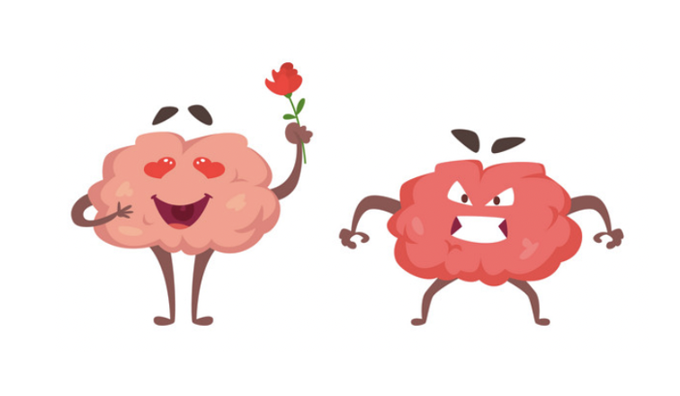
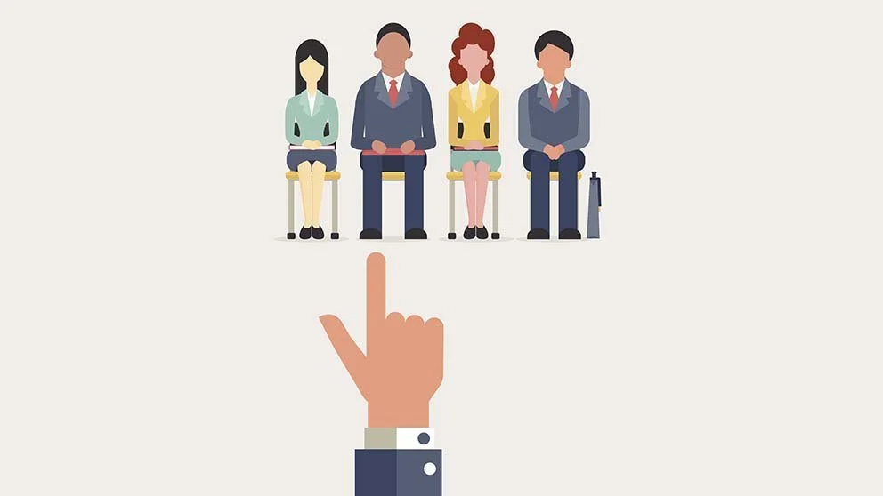

Research
Implicit Evaluations that are Affectively Complex
Attitudes are complex. My first line of research focuses on implicit bivalence – the phenomenon that the same attitude object can be associated with both positive and negative implicit evaluations. Specifically, I ask two interrelated questions: what triggers implicit bivalence and why does implicit bivalence emerge?
Past research suggests that implicit self-positivity is a universal feature of the human mind, but is the implicit self entirely positive? My work (Ni, Lee, & Zayas, 2025, Journal of Cross-Cultural Psychology) found that priming participants with the self in an evaluative priming task elicited strong implicit positivity, but also some implicit negativity. In contrast, priming a personally significant, liked object (e.g., piano, chocolate) only elicited implicit positivity. Moreover, such implicit self-bivalence was not specific to Western, individualistic samples, but was exhibited in an Eastern, collectivistic sample. This work suggests the affectively complex, bivalent nature of self-representations to be a robust characteristic of the human mind. Experiences in the social world are filled with opportunities for both social rewards (e.g., acceptance, belonging) and threats (e.g., rejection, exclusion), which may give rise to both positive and negative evaluations etched in the self-representations.
If the self is implicitly bivalent due to the affective complexity of associated learning experiences, what about novel persons that we know little about? In another research (Ni, Korkmaz, Ferguson & Zayas, in prep.), I found that simply presenting the name or image of a novel person in the absence of any other information was sufficient to elicit implicit bivalence. Even after participants learned univalent behaviors (i.e., either positive or negative) enacted by the novel person, the person continued to elicit implicit bivalence, though strength of implicit positivity or negativity did increase depending on valence of the behaviors. These findings suggest that, when evaluating a novel person, perceivers may bootstrap from existing representations to quickly create a rudimentary representation and make adjustments based on new information.
Does implicit bivalence arise only for people, or can it be generalized to other aspects of the environment? Considering the fundamental role of mind perception in human information processing, I tested the hypothesis that implicit bivalence may generalize to even non-human targets perceived to have a mind (Ni & Zayas, under revision). I used social robots – robots designed to interact with humans in socially meaningful ways – as a theoretically informative test case. Consistent with the hypothesis, I found that social robots perceived to have a mind elicit implicit bivalence. The findings highlight a new and previously unidentified route for how attitude objects acquire positive and negative associations in memory: implicit bivalence may arise when entities are perceived to have a mind, facilitating perceivers to quickly and effortlessly make sense of their environment.
Taken together, my work has advanced the understanding of the cognitive architecture of mental representations. Given the important role of mental representations in our cognition, affect, and behavior (Lee, Ni, Fang, Ravreby, Shoda, & Zayas, 2024, Affective Science; Zayas, Strycharz, & Ni, 2025, European Journal of Social Psychology), I aim to continue to examine the consequences of the affectively complex mental representations on how we perceive and interact with others in the social world.
- Ni, M., Lee, R. T., & Zayas, V. (2025). The bittersweetness of self-representations: Cross-cultural insights that the self triggers both positive and negative implicit evaluations. Journal of Cross-Cultural Psychology. https://doi.org/10.1177/00220221251355914
- Ni, M., & Zayas, V. (under review). Beyond human: Implicit bivalence extends to social robots.
- Ni, M., & Zayas, V. (in prep.). The pervasiveness of the person implicit-bivalence effect: Even novel persons spontaneously elicit positive and negative implicit evaluations.

Social Identities that are Multifaceted
My second line of research focuses specifically on how people mentally represent the complexity of their identities – the social roles, relations, and group memberships that define who one is. I study both within-person processes of how people represent multiple social identities of the self and between-group differences in how social identities shape beliefs and behaviors of individuals from stigmatized vs. non-stigmatized social groups.
Despite the rich body of literature on racial identity and ethnic identity, the two constructs are still not well-understood and not clearly demarcated, as evidenced by the often-times interchangeable and conflated use of the two constructs, theoretically, empirically, and practically. My research (Ni & Rivera, in prep.) found that participants reported stronger subjective identifications with their ethnicity than race, rating their ethnic identity to be more central to self-concepts. The result was generalizable across participants from diverse racial and ethnic backgrounds. When asked to indicate their ethnicity and race in open-ended manners, participants also gave differential responses: they were more likely to give responses referring to physical characteristics (e.g., “Black,” “White”) when asked about race, and responses referring to geographical regions or heritage (e.g., “African American,” “European”) when asked about ethnicity. This research suggests that the lay public are normatively aware of the basic definitional distinctions between race and ethnicity, and thus hold distinct mental representations of each. This work provides implications for acknowledging and addressing the nuances between racial and ethnic identities in both theoretical frameworks and empirical practices.
In another project (Ni, Auelua-Toomey, & Rivera, in prep.), I examined how belonging to underrepresented social groups influences college students’ mentor preferences and application behaviors. Preliminary findings showed that female students (vs. male students) and students of Color (vs. White students) both reported stronger beliefs about the importance of having mentors who share their gender or racial/ethnic identity. Female students also reported having applied to a greater proportion of female mentors than male students. This research highlights that social identities play a crucial role in shaping cognition and behaviors in academic settings. A self-selection bias from the students contributes to homophily in academic mentoring relationships (Ni & Rivera, in prep.). Interestingly, East Asian students, while not typically considered underrepresented in higher education and actually comprising the largest racial group in my sample, exhibited cognitive and behavioral patterns similar to other students of Color, rather than White students. They reported greater racial identity centrality and a stronger belief of the importance of having same-race mentors. This finding suggests that experience in one context can spill over to another. Numerical representation alone does not equate to dominant-group identity experience.
- Ni, M. & Rivera, L. M. (under revision). Does race = ethnicity? Toward a better understanding of group identity mental representations.
- Ni, M., Auelua-Toomey, S. L., & Rivera, L. M. (in prep.). Why does homophily emerge in academic mentoring: The role of mentees’ beliefs and application behaviors. (ongoing data collection).
Biases that Manifest in Diverse Contexts
How do our mental representations, beliefs, and attitudes influence our judgments and decision-making about others? My other line of research connects individual-level social cognition with biases and inequalities in diverse social contexts (e.g., academia, workplace, health).
I have examined the effect of “sexy” social media photos on female vs. male candidates’ professional outcomes (Ni & Zayas, 2023, Journal of Experimental Social Psychology). With the prevalence of social media use, one unintended consequence is that social media users make available a wealth of personal information to others for social purposes, but this information may be used for making evaluations about professional outcomes. My work examined whether there is a double standard in how candidates’ “sexy” social media photos shape professional selection decisions. Through a series of experiments with simulated hiring tasks, I found that “sexy” social media photos disproportionately penalized female candidates, suggesting evidence of double standards. This work identifies a new route by which social media introduces gender bias in the professional selection process, providing implications for individuals seeking professional advancement and organizations seeking to promote diversity, equity, and inclusion.
In another project (Ni, Abrego, & Rivera, under revision), I studied regional aggregates of implicit bias as a macro-psychological factor related to racial environmental health inequalities. Analyses of two independent, public datasets showed that county-level implicit anti-Black prejudice of White respondents was associated with poorer environmental health conditions and resources for Black children in the county. Moving beyond individual-level bias, this research highlights the role of regional-level bias in understanding racial health inequalities.
- Ni, M., & Zayas, V. (2023). Sexy social media photos disproportionately penalize female candidates’ professional outcomes: Evidence of a sexual double standard. Journal of Experimental Social Psychology, 109, 104504.
- Ni, M., Abrego, E., & Rivera, L. M. (under revision). A social psychological perspective on racial environmental health inequalities: Regional implicit prejudice is related to Black children’s poor environmental health conditions and resources.
